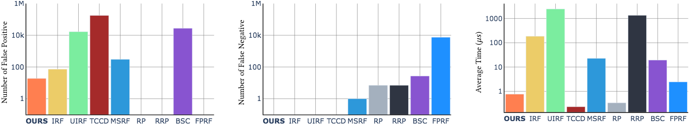

A Large Scale Benchmark and an Inclusion-Based Algorithm for Continuous Collision Detection
Bolun Wang*, Zachary Ferguson*, Teseo Schneider, Xin Jiang, Marco Attene, Daniele Panozzo

Paper¶
Abstract¶
We introduce a large scale benchmark for continuous collision detection (CCD) algorithms, composed of queries manually constructed to highlight challenging degenerate cases and automatically generated using existing simulators to cover common cases. We use the benchmark to evaluate the accuracy, correctness, and efficiency of state-of-the-art continuous collision detection algorithms, both with and without minimal separation.
We discover that, despite the widespread use of CCD algorithms, existing algorithms are either: (1) correct but impractically slow, (2) efficient but incorrect, introducing false negatives which will lead to interpenetration, or (3) correct but over conservative, reporting a large number of false positives which might lead to inaccuracies when integrated in a simulator.
By combining the seminal interval root finding algorithm introduced by Snyder in 1992 with modern predicate design techniques, we propose a simple and efficient CCD algorithm. This algorithm is competitive with state of the art methods in terms of runtime while conservatively reporting the time of impact and allowing explicit trade off between runtime efficiency and number of false positives reported.
Video¶
Source Code and Data¶


BibTex¶
@article{Wang:2021:Benchmark,
title = {A Large Scale Benchmark and an Inclusion-Based Algorithm for Continuous Collision Detection},
author = {Bolun Wang and Zachary Ferguson and Teseo Schneider and Xin Jiang and Marco Attene and Daniele Panozzo},
year = 2021,
journal = {ACM Transactions on Graphics}
}
Acknowledgments¶
This work was partially supported by the NSF CAREER award under Grant No. 1652515, the NSF grants OAC-1835712, OIA-1937043, CHS-1908767, CHS-1901091, National Key Research and Development Program of China No. 2020YFA0713700, EU ERC Advanced Grant CHANGE No. 694515, a Sloan Fellowship, a gift from Adobe Research, a gift from nTopology, and a gift from Advanced Micro Devices, Inc.